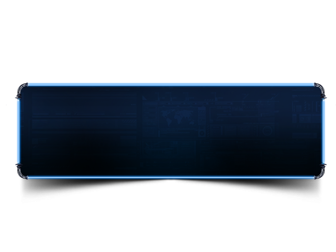

Presentación de Trabajos Prácticos
de la materia Entornos Gráficos
Realizado con Github

Información Extra
Esta página fue hecha por Nicolás Kler
Legajo: 44009
Profesor: Julián Gabriel Butti
Inicio
Práctica 1
Práctica Complementaria
Práctica 2
Práctica 3
Práctica 1
Práctica Complementaria
Práctica 2
Práctica 3